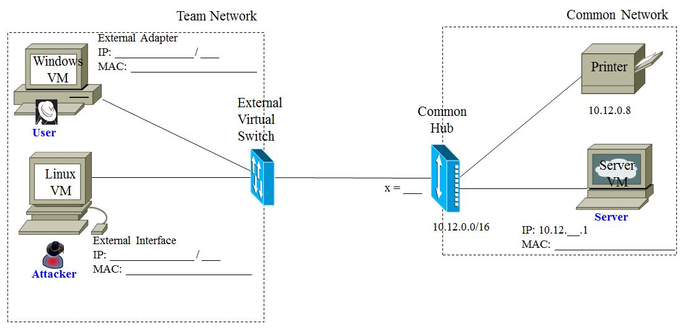

Le labo a pour but de :
Dans ce labo, vous allez examiner certaines vulnérabilités des protocoles réseaux en utilisation. La suite de protocoles réseaux la plus répandue sur les ordinateurs modernes, qu’on appelle la pile protocolaire TCP/IP, a été conçue dans un environnement de confiance. On pouvait faire confiance aux ordinateurs qui communiquaient sur le réseau, en sachant que ceux-ci ne mentiraient pas vis-à-vis leur identité ou bien qu’il n’essaieraient pas de saisir des communications ne leur étant pas adressées. Dans l’environnement global de l’Internet, cette présomption de confiance et d’honnêteté n’est plus valable puisque des attaquants contrôlent certains des ordinateurs du réseaux.
Nous utiliserons donc ce labo pour voir comment les attaquants peuvent manipuler des paquets et comment ils peuvent mentir pour offusquer leur identité. Le réseau peut être manipulé à n’importe quelle couche du modèle de pile protocolaire OSI. Pour ce labo, nous allons manipuler l’information de la couche de lien de données (couche 2), de la couche Internet (réseau à la couche 3) et de la couche transport (couche 4). Ces manipulations nous permettrons d’intercepter des communications, de les rediriger et de détourner des sessions TCP. Vous allez utiliser un outil appelé ettercap pour manipuler les paquets; celui-ci est vieux, mais il illustre bien comment il est possible de manipuler les paquets. Vous allez enregistrer et analyser le traffic d’attaque pour bien comprendre comment les vulnérabilités réseau sont exploitées.
Rappelez vous bien ce dont on a discuté lors de la séance 5 - Protocole ARP.
Comme vous le savez, on utilise ARP sur le réseau local pour découvrir l’adresse MAC correspondant à une adresse IP spécifique. ARP permet de faire le mappage essentiel entre la couche 2 et la couche 3 de la pile protocolaire. Lorsqu’un ordinateur démarre et se joint au réseau, il connaît ses propres adresses MAC et IP, mais il ne connaît pas celles des autres machines. Les applications qui compte sur le réseau ne savent pas quelle technologies sont utilisées sur le LAN; elles ne connaissent habituellement que les adresses IP. Comment est-ce qu’un ordinateur peut savoir qu’elle adresse MAC utiliser pour communiquer avec une adresse IP spécifique? L’ordinateur utilise une diffusion générale ARP sur le segment local. Il diffuse un paquet ARP who-has demandant si un ordinateur est connecté à la machine utilisant l’adresse IP. Tout les ordinateurs sur le segment local écoutent ces diffusions et si l’un d’eux remarque que la diffusion concerne sa propres adresse IP, il répond avec un paquet ARP reply qui est envoyé au demandeur original avec son adresse MAC. Le demandeur qui a envoyé la diffusion ARP who-has connait maintenant l’adresse MAC correspondante à l’adresse IP et peut envoyer des trames directement à celui-ci. Ce mappage d’adresse ARP<—>IP est stocké dans un cache ARP local.
Dans une invite de commande, exécutez la commande arp -a. Cette commande imprime la liste des mappages se trouvant dans le cache ARP; ordinateurs avec lesquelles votre machine peut communiquer directement à la couche 2, sans faire de diffusion d’un message ARP who-has. Exécutez maintenant la commande arp -d *. Ceci effacera toutes les entrées du cache ARP (vérifiez si le cache est bien vide)
Le protocole ARP permet à un ordinateur de faire le mappage entre les adresses MAC et IP lorsque celui-ci désire transmettre un paquet, mais il surveille aussi tout le traffic ARP du réseau. En surveillant ainsi le traffic ARP, un ordinateur peut bâtir un mappage MAC à IP plus complet, et stocker celui-ci dans son cache ARP. Utiliser les mappages qu’il a remarqué permet à un système de parfois pouvoir communiquer avec un nouvel ordinateur sans devoir attendre le résultat d’une requête ARP. On se souvient que les entrées du cache ARP sont mises à jour si elles existent déjà, sous le concept qu’on appelle “ARP gratuit”.
Il est facile d’imaginer qu’afin de remplir son cache ARP, un ordinateur fait confiance aux expéditeurs de messages ARP de ne pas mentir. Les attaquants peuvent donc créer de faux paquets ARP et entraîner ainsi un ordinateur à changer les mappages de son cache ARP. L’attaquant peut ainsi convaincre ses victimes d’envoyer leur paquets où il le désire. On appelle ceci la mystification ARP (ARP Spoofing) ou l’empoisonnement de cache ARP (ARP Cache Poisoning).
Nous couvrirons le concept de connexion TCP lors de notre discussion de la couche transport plus tard au cours. Pour l’instant, il suffit de dire qu’une connexion TCP offre un moyen d’envoyer un flux d’octets d’une interface de connexion (socket) formée d’une adresse IP et d’un port TCP de source, vers une autre interface de connexion formée d’une adresse IP et un port TCP de destination. La connexion permet d’envoyer un flux d’octets dans les deux directions; par exemple de l’adresse IP 10.12.x.20 au port 2003 à l’adresse IP 10.12.x.30 au port 23 et vice-versa.
Si un attaquant peut surveiller une connexion TCP en cours, il a accès à toute l’information contenue dans les en=têtes IP et TCP, ainsi que dans la charge utile de chaque paquet. Il va sans dire qu’un attaquant peut surveiller la connexion, mais en analysant l’information propice, les attaquants peuvent détourner (hijack) la connexion. Pour ce faire, les attaquants doivent connaitre les adresses IP et les ports utilisés par la connexion. Ils doivent aussi connaître les numéros de séquences de l’en-tête TCP qui sont utilisé à des fins de contrôle d’erreur dans les flux TCP. Ces numéros de séquences sont incrémentés pour chaque paquet ayant traversés le flux (il y en a un different pour chaque direction de la connexion) et ils servent à s’assurer que :
Lors de l’initiation de la connexion TCP en 3 étapes, un numéro de séquence aléatoire est choisi pour chaque direction de la communication. Lors des transferts dans chaque direction, les numéros de séquence incrémentent pour capturer le nombre d’octets étant transférés dans chaque direction. Les numéros de séquences permettent ainsi de réassembler les paquets à destination, et de découvrir quels paquets ont été perdus.
Puisque l’attaquant renifle le trafic, il a toute l’information nécessaire pour fabriquer un faux paquet qui respecte les caractéristiques du prochain paquet dans la connexion TCP. Par exemple, en attaquant un utilisateur étant connecté via une session telnet sur un ordinateur éloigné, un attaquant pourrait envoyer leurs propres commandes au serveur telnet. Le paquets frauduleux seraient ainsi interprétés et exécutés par le serveur comme s’ils venaient de l’utilisateur légitime. Ceci représente un détournement TCP élémentaire (Simple TCP Hijack).
Il y a certains problèmes avec le détournement TCP élémentaire. Tout semble légitime pour le premier paquet, mais les paquets subséquents peuvent éprouver des problèmes. Lorsque l’attaquant insère un paquet dans la communication entre le client et le serveur compromis, les numéros de séquences sont incrémentés comme on s’y attend selon protocole TCP pour qu’ils soient bien interprétés à leurs destination. Le client compromis n’est bien sûr pas au courant des actions de l’attaquant, et il perd le synchronisation des numéros de séquence avec le serveur. Lorsque le serveur compromis fait accusé réception au client compromis, celui-ci voit un accusé réception pour des données qu’il n’a jamais envoyées (puisque les données frauduleuses ont été envoyées par l’attaquant). Les systèmes d’exploitation traitent ce problème de synchronisation de numéros de séquences différemment, mais il y a le risque d’observer une séquence d’accusés réception entre les machines alors que le client et le serveur compromis essaient en vain de se synchroniser de nouveau (Ack Storm); cette séquence peut bloquer les systèmes.
En combinant les techniques de mystification ARP avec le détournement TCP que nous venons de discuter, on peut survenir au problème d’accusés réception rogue en injectant des données dans le flux TCP, ou en assumant un contrôle complet sur la connexion TCP. Si l’attaquant utilise la mystification ARP, il peut permettre au client et au serveur compromis de communiquer par l’intermédiaire de l’ordinateur de l’attaquant. L’attaquent agit maintenant à titre d’intermédiaire (man-in-the-middle). L’attaquant contrôle ainsi les flux de paquets entre le serveur et le client. L’attaquant peut effectuer la mystification ARP avant de commencer le détournement TCP en faisant simplement relais des communication enter le client et le serveur compromis.
Par contre, lorsque l’attaquant veut injecter des paquets entre les ordinateurs compromis, il doit ajuster les numéros de séquence en temps réels, et les numéros de séquences entre le serveur et le client compromis seront hors séquence puisqu’un ordinateur aura reçu plus de données que l’autre en aura envoyé. La machine attaquante doit donc modifier la séquence des paquets en temps réel pour garder la synchronisation des deux cotés.
Afin de complètement contrôler la connexion, l’attaquant arrête de faire parvenir les paquets vers la machine client de l’utilisateur légitime. Il contrôle alors complètement la connexion sans que le serveur hôte ne s’en soit rendu compte. La connexion vers le client finira par expirer, et l’utilisateur légitime croiera alors simplement que la connexion a été fermée; à moins que l’attaquent utilise des méthodes plus sophistiquées afin de ré-établir la synchronisation lorsqu’il a terminé l’attaque.
Vous allez utiliser un outil Linux appelé ettercap afin d’effectuer la mystification ARP et le détournement TCP.
Configurer votre réseau en utilisant le concentrateur commun comme suit:

Démarrez votre Windows VM; pour ce labo, nous référerons à celle-ci comme l’utilisateur. Configurez l’adaptateur External selon les spécifications données ci-dessus. Assurez vous d’avoir bien configuré le tout en faisant les pings appropriés, et en établissant une session telnet au compte d’alice (avec mot de passe : secret) à votre Server VM de l’utilisateur.
Notez qu’on utilise encore des alias IP pour fournir une victime unique pour chaque équipe. Il y aurai peu de chance que les sessions de détournements fonctionneraient si toutes les équipes attaquaient le même serveur; il y aura de bonne chance qu’une instance d’ettercap essaierait d’attaquer un autre instance du même outil.
Arrêtez votre session telnet du compte d’alice au serveur. Démarrez votre Linux VM, à laquelle nous référons comme l’attaquant. Configurez l’adaptateur External de celle-ci selon les spécification indiquées ici-haut. Rappelez-vous que vous avez appris à afficher et configurer une interface sur la machine virtuelle Linux pendant le préambule.
ip helpip address helpip link helpip address show, ouip linksudo ip address add 10.12.x.10/16 dev Externalsudo ip link set External upsudo ip link set Internal downConfirmez votre configuration en faisant ping à la victime de l’attaquant. Confirmez aussi que vous pouvez renifler le trafic telnet entre l’utilisateur et la victime de l’attaquant en utilisant tcpdump.
(#1) Utilisez tcpdump et/ou arp pour identifier les mappages des adresses MAC-IP pour chacune des trois machines. Il serait une bonne idée d’identifier celles-ci sur votre diagramme, que vous devez inclure avec votre rapport de labo.
Le programme Ettercap que vous utiliserez pour cette partie du laboratoire est connu pour rencontrer des problèmes. Si vous rencontrez un problème avec cette partie du laboratoire, ou si le logiciel ne fonctionne pas comme prévu, le mieux est de réessayer l'étape en cours. Si cela échoue, fermez le logiciel et toutes les connexions telnet ouvertes, puis réessayez.
Démarrez ettercap de l’attaquant :
sudo -E ettercap -G &Si cette commande ne démarre pas ettercap correctement, essayez la suivante :
which ettercapCette commande devrait afficher le chemin menant au fichier elf (un fichier exécutable linux) pour ettercap. Pour démarrer ettercap utilisez la commande suivante :
sudo -E **insérez le résultat de la commande précédente ici** -G &(#2) Quel est la différence entre l’utilisation de la commande ettercap sans son chemin de fichier et celle qui l’inclut de l’interpréteur de commande ?
Vous devriez voir l’interface utilisateur graphique démarrer. Configurer tout d’abord le renifleur ettercap en choisissant le menu main : Sniff -> Unified. Dans la fenêtre spécifiez l’adaptateur External. Commencez le reniflage en choisissant le menu main : Start -> Start sniffing.
Lancez une session telnet au compte d’alice depuis la victime (soyez bien certain de fermer toute session telnet et d’en démarrez une nouvelles après avoir démarré ettercap).
(#3) Jetez un coup d’œil au dialogue au bas de l’écran ettercap sur l’attaquant; qu’est-ce que vous remarquez?
Examinez maintenant la connexion en choisissant le menu main : View -> Connections.
Utilisez la console ettercap et explorez! (amusez-vous bien mais n’utilisez pas mitm, inject data ou inject file pour l’instant). Essayez les trucs suivants :
View->StatisticsIl est important de noter que si votre session telnet expire, rencontre une erreur ou pour une raison quelconque se reconnecte, la boîte de dialogue Connection data ne passera pas automatiquement à la nouvelle connexion. Au lieu de cela, la connexion semble être morte. Vous devrez trouver et ouvrir la nouvelle connexion.
Nous utiliserons maintenant ettercap pour injecter nos propres commandes dans la connexion. Nous devons tout d’abord garnir une liste d’hôtes que nous pouvons cibler pour attaque. Faites ceci à partir de l’onglet Profiles en cliquant le bouton Convert to Host List au bas de l’écran. Ouvrez ensuite l’onglet Hosts -> Host list.
Add to Target 1.Add to Target 2.Vous pouvez consulter la liste de cibles avec l’onglet Targets->Current Targets. Choisissez maintenant le menu main : Mitm -> Arp poisoning. Dans l’onglet ARP poisoning tab, choisissez Sniff remote connections. Vous devriez voir des indications que le tout fonctionne au bas de l’écran.
Allez à l’onglet Connection data pour la session telnet de l’utilisateur (celle-ci est maintenant attaquée à l’aide d’un intermédiaire). Tapez des commandes depuis l’utilisateur et soyez certain qu’elles sont reniflées dans ettercap.
Vous pouvez maintenant injecter des commandes dans la connexion à l’aide du bouton Inject Data au bas de l’écran.
Arrêtez l’attaque mitm, arrêtez de renifler et fermez le programme Ettercap.
Dans cette activité, vous allez répétez la séquence d’événements de l’activité 2 pour recréer le détournement TCP. Cette fois-ci par contre, vous allez renifler tout le trafic de l’attaquant à l’aide de tcpdump. Pour chaque question posée à la partie 3, fournissez un échantillon de traffic tcpdump dans votre rapport de labo.
Nous vous recommandons fortement de sauvegarder le trafic réseau dans un fichier .pcap à l’aide de tcpdump (avec l’option -w) afin que vous puissiez le consulter plus tard avec Wireshark; Vous devriez utiliser sudo tcpdump pour renifler le traffic (demandez de l’aide de l’instructeur si vous avez besoin d’aide après avoir consulté le manuel). Il vous sera peut-être utile de rediriger les résultats de certaines commandes telles arp (avec > file.txt).
Encore une fois, rappelez-vous qu’il y a des phases distinctes à votre attaque. Il y a empoisonnement ARP, il y a l’attaque MITM, et enfin il y aura un piratage TCP avec des données injectées.
On vous suggère de bien lire le restant du labo avant de continuer, afin de vous assurez que vous comprenez ce qui est requis. Une fois que vous êtes confiant que votre pcap vous permettra de produire tous les échantillons dont vous avez besoins, éteignez votre connexion telnet au compte d’alice de l’utilisateur à la victime. Vous remarquerez que nous vous demandons de bien discuter de plusieurs aspects dans ce labo; on s’attend à ce que chacun soit traité en détails.
(#4) Expliquez ce qui arrive au cache ARP de l’utilisateur, avant et après l’empoisonnement, en utilisant des exemples spécifiques du cache ARP. Vous pouvez inclure des exemples de traffic ayant empoisonné le cache dans votre rapport (pas plus d’une page).
(#5) Expliquez quels paquets de votre capture pcap sont associés avec l’empoisonnement du cache ARP. Notez bien que certains paquets empoisonnent le cache et certain testent le succès de la mystification. Soyez bien certain d’inclure des échantillons de paquets dans votre rapport de labo.
(#6) Démontrez comment l’attaquant agit comme intermédiaire (man-in-the-middle). Portez une attention particulière aux correspondances d’adresses MAC et IP dans les en-têtes de paquets. Vous pouvez par exemple tracer une portion de la session telnet de l’utilisateur à l’attaquant et ensuite de l’attaquant à la victime.
(#7) Expliquez quels paquets de votre trace tcpdump sont associés au détournement TCP. Encore une fois, faites très attention à la correspondance des adresses MAC à IP dans les en-têtes de paquets lors de l’explication. (N’oubliez pas quelles données vous avez injectées vous seront utiles ici.)
(#8) Comme mentionné dans l’explication du laboratoire, chaque paquet TCP a un numéro de séquence. Ce numéro suit le nombre d’octets envoyés sur une connexion TCP donnée et est utilisé avec les numéros d’accusé de réception pour garantir que tous les octets ont été remis avec succès. Commencez au début de votre capture et examinez les numéros de séquence de l’utilisateur à l’attaquant et de l’attaquant au serveur. Examinez ensuite les numéros de séquence après votre piratage TCP. Le comportement des numéros de séquence a-t-il changé? Discutez de ce qui s’est passé et pourquoi.
Une fois que vous êtes confiants que vous avez tout ce dont vous avez besoin pour votre rapport de labo, suivez les instructions du préambule pour éteindre votre Windows VM et fermez votre session avec l’ordinateur hôte. Soyez bien certain de laisser la cage dans le même état que vous l’avez trouvé, et demandez à l’instructeur la combinaison de la clé si vous désirez travaillez hors de la session de labo.
Votre rapport est à remettre Mercredi 10 Fevrier avant 14h00 sur Moodle. Votre rapport doit suivre le modèle suivant et être au format PDF. Vous devez nommer votre rapport de la façon suivante : GEF330_lab2_NomEtudiant1_NomEtudiant2.zip Pour ce labo, votre rapport doit contenir :